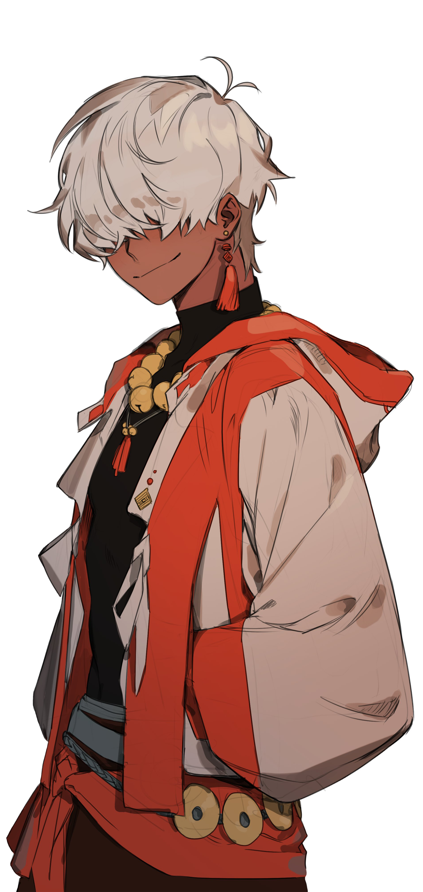

Ando
Male
Monk
Optimist
Fists & Rope
Physically blind
Twenty-five
Non-lethal
Nepali
Single
Zen
A Nepali child who
was taken to a Monastery
at a young age where he was raised to become a monk. Trained in nonlethal martial arts, when Ando became of age
he left his home in the search for Nirvana. Though, as time passed conflicting rumors spread about the male's blindness.
If
he was born sightless
or if the monks
took their
due.
Dharma
This is where I'd put
something about friends
or skills. Read up on what a softstrike monk is. That's Ando.
No friends yet.
